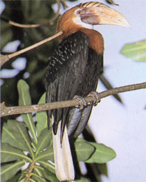

|
第１９ 叱られて雨にびしょ濡れ
 『重い二号無線機を人力で運搬し、道路偵察隊に同行しながら、通信することは出来ません』と、花輪支隊長に異議をとなえた。花輪 中佐殿は内心、私が命令に従わないので吃驚した事と思う。一方、そうは言ったものの、支隊長命令を実行するため、直ちにラバウル に居る第十八軍通信隊長（内田大佐）宛てに次の電報を打った。『ラバウルに待機させている、山口無線小隊の大森幸明第一分隊長に、三号無線機を携行させ、大至急マダンに派遣されたい』 という電報を打ち、その返事を待った。花輪支隊長が無茶を言うから、こっちもまた、予想外のことを要求した。８００キロも離れた海の 彼方の、ラバウルにいる第十八軍通信隊本部からは、なかなか返事が来ない。私はヂリヂリしながら黙って待った。当時、制空権は敵に あったので、無線一ケ分隊をどうして？マダンまで輸送するかが大問題であった筈だ。たちまちの内に、３日間は過ぎてしまった。 再び私は、『花輪支隊本部に出頭せよ』という命令を受けた。軍刀を腰にさげ厳しい覚悟で、支隊本部をお伺いした。天幕の中には、 花輪中佐殿がデンと構えていた。その側には、口髭をつけた磯村副官も黙って座っていた。私が挨拶すると、天幕の中から花輪中佐殿が 昂然と言い放った。 『山口少尉、君はどうして早く出発しないのか。貴官のため、３日分の食料が無くなってしまった。道路偵察隊の携帯食料はあと１週間 分しか残っていない』 と、言ってカンカンに怒っている。私は支隊長が入っている天幕の入り口に、直立不動の姿勢で立ったまま、黙って小言を聞くだけだ。 運悪く、おりしも物凄いスコールが降って来た。私は天幕の外だからたちまち、ずぶ濡れになってしまった。彼は天幕の中で、プンプン 怒ってタバコを吹かしている。私は弁解もせず、立ったまま黙って我慢した。花輪中佐のニックネームは「チームニー」と聞いていたが、 なるほどこの人は良く煙草を吸うなあ！と思って立っていた。すると、とうとう花輪中佐殿は業を煮やし 「もうよい、帰れッ」 と言い放した。私はスコールの中を部下が待っている、草原の中にある一軒家の土人小屋（マダン軍通信所）に戻った。私の姿を見つけ た、当番兵の木下上等兵が 『隊長殿、ずぶ濡れです』 と言って、私を労ってくれた。そんな事があって、２日たってから、やっとのことで山口無線小隊第一分隊長大森軍曹が、三号無線機を 一基携帯し部下５名を指揮して飛行機に搭乗しマダン飛行場にやってきた。荏苒として日を送った訳ではないが、日時が大分過ぎて居た ので、大森無線分隊は飛行場からラエ道路偵察隊に直行することになった。マダンのゴム林の中から出てきた道は３００キロ彼方のラエま で続いています。ゴム林から出て来た道の、１００メートルほどラエ方によったヤシ林の下で、完全武装した大森軍曹以下５名と別れの挨拶 をした。その時になって、花輪支隊長は無線器材の運搬用に、小さなロバに似た馬を一頭調達してきて、軍通でこれを使えと言う。私は こんな馬を何処から調達したのだろうか？と訝った。ニユーギニアにも馬が居るのかと吃驚した。無線通信兵は馬は扱えない。そんな訳 で、道路偵察隊の歩兵が手綱を取り、三号無線機を運搬した。 ラエ道路偵察隊に同行した軍通の大森幸明無線第一分隊長以下５名は、赤道直下で熱帯雨林が繁茂したジャングルの中にある獣道を行 軍し、マダンと交信しながら、無事ラエに到着した。一週間分の食料しか携行せず、敵機の来襲を受けながら、約１か月の日時を要して 重大な任務を達成した。大森無線分隊は偉大な武功を立てました。 後日潭 １．猛軍通信隊、山口無線小隊、大森無線第一分隊のその後高橋道路偵察隊に同行した大森無線第一分隊通信兵のその後の消息日本に生 還できた戦友は大森幸明陸軍曹長、谷岡伊勢松陸軍軍曹の２名。桜川兵長、山下兵長、他１名（名前を思い出せない）の３名はラエ到着 までは無事だったが、その後、ラエより撤退時に戦死した。冥福を祈る ２．陸軍曹長大森幸明さんは、第十八軍通信隊長から賞詞をもらった。陸軍軍曹谷岡伊勢松さんは、この武功その他で、陸軍軍曹まで昇進した。 ３．携行食料は１週間分だったのに、ラエ到着まで３０日間を要した。食料はどうしたのだろう？この事だけでも、大森分隊長以下の苦 労の程がしのばれます。 ４．高橋中尉は行軍中、敵機を警戒して電波を管制したので、通信がやりにくかったという報告を受けている。 ５．第五十師団がラエを撤退し、マダンに退却時に、折角、偵察したこの道路を利用せず、フィニステル山系を越え撤退した。敵の飛行機 を恐れたためである。 ６．花輪支隊長が差し向けたロバ（馬？）は食料が欠乏したので、食べてしまったらしい。馬のことを聞いても、だれも知らない。 ７．花輪支隊長は、『山口少尉に歩兵一ケ小隊を付けて、二号無線機は担がせるから、ラエに早く出発せよ』と、きつい命令を出したが、 私はガンとして断り続けた。それでも、軍の通信参謀は当方の事情を洞察し、制空権がないにも拘らず、無線通信一個分隊を飛行機で運ば せた、その英断には感謝します。この通信参謀中元大尉（その後少佐に昇進、ホーランジアにて戦死）には、ラバウルを出るとき大変お世 話になった思い出がある。 ８．ロバと書いたが、馬かロバか私は判断できなかった。ロバを何処から調達したか？歩兵の能力の素晴らしさには感心した。 ９．日本軍が偵察したマダンーラエ間の道路は、戦後の今日では、立派なハイウエーになっているという。ハイウエーと言っても無舗装とい う。赤道直下で無舗装の道路維持は大変であろう。 |